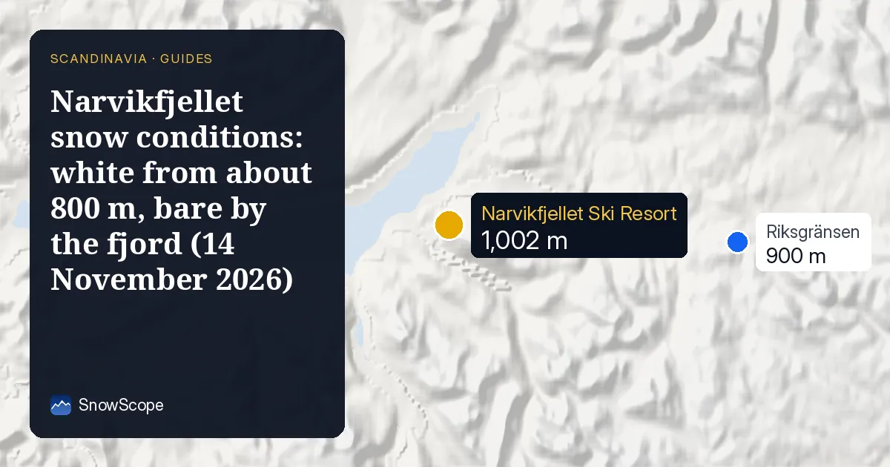

Narvikfjellet snow conditions: white from about 800 m, bare by the fjord (14 November 2026)
Narvikfjellet sits on a steep gradient from fjord to mountain top. On 14 November the SnowScope map shows real snow only above 800 m: about 50 cm at the summit, but just 2-3 cm lower down and bare ground at the base. The nearest weather station, Straumsnes at 200 m, measured 2 cm on the morning of 13 November.
See the live snow forecast for Narvikfjellet Ski Resort in the SnowScope appSnow depth, powder alerts and the 3D map, free.

Height decides everything
This resort has two completely different snow worlds. Above 844 m the map shows 35 cm or more. Below 500 m there is almost no cover. That sharp split matters for your day: the upper lifts serve proper skiing terrain, while the lower runs are thin or bare.
Katterjåkk, a station on the Swedish border at 514 m and 29 km away, measured 9 cm on 13 November. That is higher than Narvik's base but still much less than the mid-slopes. The jump in depth over just 300 vertical metres tells you that even small snowfall differences across this terrain are real.

What fell in the past week
Between 6 and 13 November, about 20 cm of snow came down across the mid-slopes and summit. The base caught only about 4 cm, and not all of that stayed; much of it may have melted or been blown away near the fjord.
The weather pattern was typical of this latitude in mid-autumn: a few pulses of snow in colder spells, then clearing. The coastal location means the base stays warmer than the heights, so the snow line shifts sharply with each weather change.
Next seven days
SnowScope forecasts about 9 cm at both the mid-slopes and the summit over the next week, and about 6 cm at the base. Crucially, the air temperature is expected to drop enough that any new snow at the base will not melt immediately. Only about one-sixth of the precipitation at the base level is forecast to fall as rain; the rest will be snow.
This is the turning point. If the forecast holds, the lower terrain will finally build a thin but continuous white cover by late November, instead of remaining mostly bare.
How this compares to past years
Over the past 46 winters, 14 November usually brings 86 cm at the top, 60 cm at mid-height and 36 cm at the base. Today's top depth of about 50 cm is roughly 40 cm below that normal. By mid-December the gap will be even larger: the median depths by 15 December are 129 cm at the top, 100 cm at mid-height and 69 cm at the base.
Early November is always thin at this latitude, but Narvikfjellet sits further north than most Norwegian resorts, so the season builds slowly. The first lasting snow arrives around mid-September, and the top stays white for about 300 days. The good news is that the long record shows no long-term decline here: peaks at the top averaged 288 cm in the earliest 15 winters and 286 cm in the latest 15.
When to expect opening
The resort's official season runs from 3 January to 2 May 2027, with a note that opening depends on enough snow production and sufficiently cold nights in December. That schedule makes sense: by early December the typical depth is already 129 cm at the top, and by Christmas it reaches about 146 cm.
In the shortest days of November there are only a few hours of usable light on the hill. Any trip in the next two weeks means planning around midday skiing.
Safety and practical notes
Terrain above the top lift at 1002 m is serious avalanche ground. Before going off-piste, check the latest bulletin from Varsom, which covers this region.
Wind off the Vest fjord can close the upper lifts suddenly, even when snow conditions are good. Ask for the daily lift status in the morning before heading up. In mid-November, weather changes fast.
Tips for skiers
- Plan your run time between 11:00 and 14:00 to use the available daylight fully; sunrise is late and sunset early at this latitude.
- Upper lifts reach terrain with 35-50 cm cover; lower runs have thin snow. Choose your height based on what you need: more cover or less steep terrain.
- Watch the weather forecast closely. The difference between rain at the base and snow at 500 m is small but crucial; cold snaps will add cover fast.
- Read the Varsom avalanche bulletin before any off-piste skiing above 1002 m. Early-season snow can be unstable on steep slopes.
- The fjord wind is real and can shut lifts. If the upper station is closed in the morning, it may stay closed; plan an alternative or return another day.
About these numbers
Resort snow depths are the deepest snow on the resort's upper slopes on the date shown; they are estimates for an area, not a measurement at one point. Forecasts can change. Always read the official avalanche bulletin before going off-piste.
Official avalanche bulletins: Varsom (NVE)
Cite this report
For research, teaching or the press: the numbers and charts are free to reuse under CC BY 4.0 with this citation.
SnowScope (2026), Narvikfjellet snow conditions: white from about 800 m, bare by the fjord (14 November 2026), https://snowscope.app/blog/en/2026/11/narvikfjellet-snow-conditions-14-november-2026.html, accessed 2026-11-14
SnowScope (Atlas Labs). (2026, November 14). Narvikfjellet snow conditions: white from about 800 m, bare by the fjord (14 November 2026). SnowScope snow reports. https://snowscope.app/blog/en/2026/11/narvikfjellet-snow-conditions-14-november-2026.html
BibTeX
@misc{snowscope2026narvikfjelletsnowconditi,
author = {{SnowScope (Atlas Labs)}},
title = {Narvikfjellet snow conditions: white from about 800 m, bare by the fjord (14 November 2026)},
year = {2026},
month = nov,
howpublished = {\url{https://snowscope.app/blog/en/2026/11/narvikfjellet-snow-conditions-14-november-2026.html}},
note = {Published 2026-11-15 09:34 UTC; accessed 2026-11-14}
}· CC BY 4.0 · Methods, data and tools →
Narvikfjellet Ski Resort: snow and temperature by height, this winter vs last (tools) →
Follow Narvikfjellet Ski Resort
Free: a message when fresh snow is coming, and the forecast every morning.
More snow reports

Røros dog sledding guide for winter 2026-27: about 5 to 6 cm of snow on Norway's national snow map, kennels listed by Destination Røros with prices, the Femundløpet sled-dog race in February 2027, and the rules for your own dog near tame reindeer.

Kiruna dog sledding guide for winter 2026-27: the weather station in Kiruna measured 0 cm of snow on 13 November, operators listed by Kiruna Lapland with season and prices, short days, and the rules for your own dog on ski tracks, in reindeer land and in Abisko National Park.

Helsinki for dog owners this weekend: 0 cm of snow measured at all five city stations on Friday. The Östersundom dog forest, nearly a hundred dog parks, the rules on ski tracks, and a grey, mild weekend.